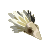
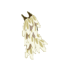
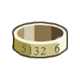
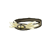
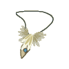
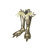
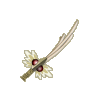
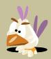

Menu barbok'you

| Niveau 41 | Kwakoiffe de Vent | ||
|---|---|---|---|
| Recettes : | Caractéristiques : | Conditions : | |
|  | 50 Plumes du kwak de vent 6 Poils de wo wabbit 4 Poils de grand pa wabbit 2 Poils de sanglier des plaines 1 Etoffe de prespic |
+11 à 15 agilité +4 à 7 sagesse 3 à 5% résistance air |
aucune |
| Remarques : | |||
| Niveau 41 | Kwape de Vent | ||
|---|---|---|---|
| Recettes : | Caractéristiques : | Conditions : | |
|  | 50 Plumes du kwak de vent 5 Plumes de tofu 2 Plumes de tofu maléfique 1 Poil de wabbit 1 Plume de corbac |
+11 à 15 agilité +21 à 30 initiative +1 créature invocable 3 à 5% résistance air |
aucune |
| Remarques : | |||
| Niveau 42 | Kwakanneau de vent | ||
|---|---|---|---|
| Recettes : | Caractéristiques : | Conditions : | |
|  | 3 Griffe de kwak 1 Plume de kwak de vent 4 Etain 3 Or 2 Bronze |
+16 à 20 agilité +6 à 10% dommages 3 à 5% résistance air |
aucune |
| Remarques : | |||
| Niveau 41 | Kwakture de vent | ||
|---|---|---|---|
| Recettes : | Caractéristiques : | Conditions : | |
|  | 5 Cuir porkass 8 Cuir sanglier des plaines 1 Peau de trukikol 3 Peau de serpentin 15 Plume kwak vent |
+11 à 15 agilité +1 à 2 prospection 3 à 5% résistance air |
aucune |
| Remarques : | |||
| Niveau 42 | Amukwak de Vent | ||
|---|---|---|---|
| Recettes : | Caractéristiques : | Conditions : | |
|  | 3 Bec du kwak de vent 3 Or 2 Argent 2 Bauxite 2 Bronze |
+16 à 20 agilité +2 CC 3 à 5% résistance air |
aucune |
| Remarques : | |||
| Niveau 40 | Kwakobottes de Vent | ||
|---|---|---|---|
| Recettes : | Caractéristiques : | Conditions : | |
|  | 4 Cuir boufton blanc 4 Cuir boufton noir 5 Cuir de porkass 20 Plume kwak vent 8 Poils sanglier |
+11 à 15 vitalité +1 dommages 3 à 5% résistance air |
aucune |
| Remarques : | |||
| Niveau 41 | Kwaklame de Vent | |||
|---|---|---|---|---|
| Recettes : | Effets : | Caractéristiques : | Conditions : | |
|  | 2 bauxite 3 or 4 Chêne 2 Griffe kwak 2 Bec de kwak de vent |
Dom : 16 à 25 (air) +11 à 15 vitalité +11 à 15 agilté +2 à 3 CC +1 à 2 prospection |
PA : 5 Portée : 1 à 1 Bonus CC : +5 Critique : 1/50 Echec : 1/50 |
agilité > 50 vitalité > 50 |
| Remarques : | ||||
| Niveau 1 | Bwak d'Air | ||
|---|---|---|---|
| Recettes : | Caractéristiques : | Conditions : | |
|  | 0 à 20% résistance air 0 à 80 agilité |
aucune | |
| Remarques : | |||
| 1 Items | Aucun bonus |
|---|---|
| 2 Items | +15 Agilité / +15 Vitalité |
| 3 Items | +20 Agilité / +20 Vitalité / +10 Force |
| 4 Items | +25 Agilité / +25 Vitalité / +15 Force / +5 Sagesse |
| 5 Items | +30 Agilité / +30 Vitalité / +20 Force / +10 Sagesse / +1 Portée |
| 6 Items | +35 Agilité / +35 Vitalité / +25 Force / +15 Sagesse / +1 Portée / +1 PM |
| 7 Items | +45 Agilité / +45 Vitalité / +30 Force / +20 Sagesse / +1 Portée / +1 PM / +1 PA |
| 8 Items | +55 Agilité / +55 Vitalité / +30 Force / +25 Sagesse / 10% Résistance terre / +1 Portée / +1 PM +1 PA |
| Bonus de la panoplie complète |
|---|
| +1 PA +1 PM 28 à 40% résistance air +131 à 155 agilité +4 à 5 CC +5 à 10% dommages +77 à 85 vitalité +1 dommage +1 créature invocable +21 à 30 initiative +2 à 4 prospection +29 à 32 sagesse +35 force +1 portée |
Dofus est un MMORPG édité par Ankama." Barbok " est un site non-officiel sans aucun lien avec Ankama.
Toutes les illustrations sont la propriété d'Ankama Studio et de Dofus. Le contenu de ce site a été rédigé initialement par Immortal, il ne s'agit que d'une remise en ligne effectuée par Eternal Games.